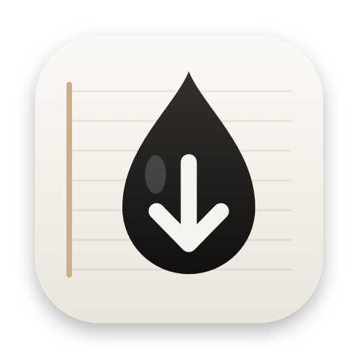
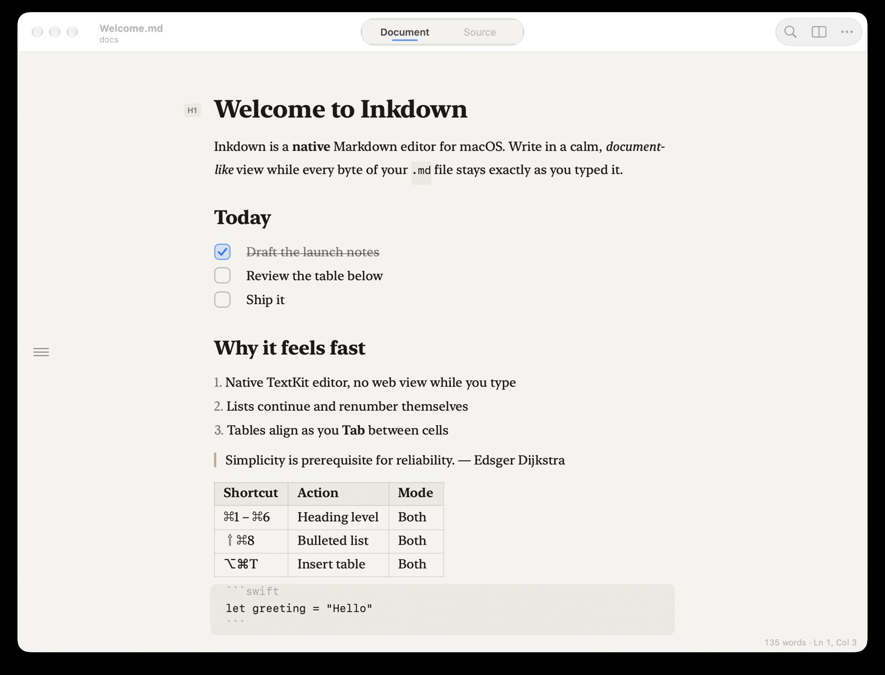
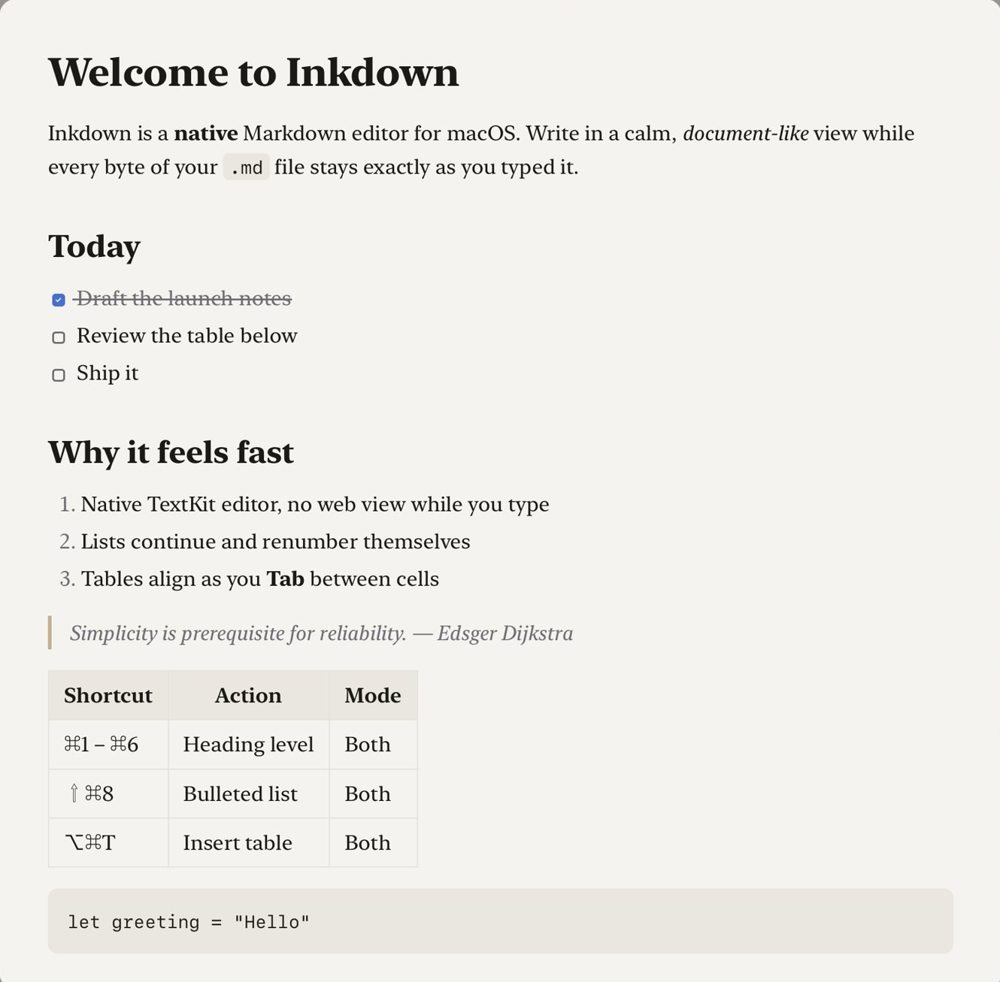
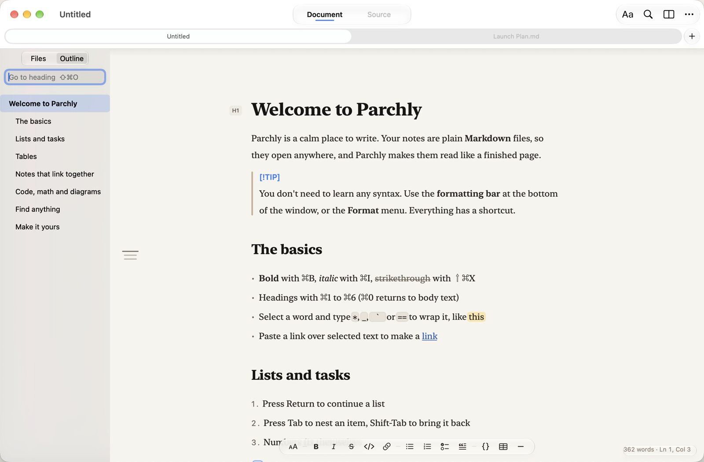

Markdown that reads like a page
and saves as plain text.
Inkdown is a native macOS app for writing, viewing and finding Markdown. Edit in a calm document view, and every .md file stays exactly as you typed it.

Type Markdown.
Read a page.
Syntax stays visible on the line you're writing. When you move on, the markers fade away and the line reads like a page, while the file on disk stays plain Markdown.
Everything Markdown, nothing extra
No library, no database, no account. Inkdown opens .md files and writes them straight back to disk.
Edit in place
Syntax hides while you read and shows up on the line you're editing. Bold, italics, links and code all render inline.
Lists that keep up
Return continues bullets, numbers and tasks. Tab nests an item, Shift-Tab outdents it, and numbered lists renumber themselves.
Real tables
Pipe tables show as a grid. Tab moves between cells and reformats the source, and Return adds a row.
Clickable tasks
Click a checkbox or press ⌘L to tick it. Done items are struck through.
Quick Look
Press Space on any .md file in Finder to see it fully rendered, without opening the app.
Find your files
⌘P searches every Markdown file in the document's folder. ⇧⌘O jumps to any heading.
Export & print
Export clean HTML or paginated PDF, or print straight from the rendered view.
Mac-native
Autosave, Versions, tabs, rename-in-titlebar, Find & Replace, dark mode and every standard text shortcut.
One file, three ways to see it
Use ⌃⌘1 for Document and ⌃⌘2 for Source. ⌘\ adds a live side-by-side preview to either.
Find it in Finder,
read it with Space
The bundled Quick Look extension renders GitHub-flavored Markdown with tables, task lists, footnotes and code. It uses the same renderer as the app's preview.
Select a .md file in Finder and press Space.

Files and outline,
one keystroke away
The outline button in the margin, or ⌘P, opens a sidebar listing every Markdown file in the folder. Fuzzy-filter it, use the arrow keys and Return, or press + to create a new file next to the current one.

Keyboard first
Every command is in the menu bar, so Help search (⇧⌘/) works as a command palette.
| Action | Shortcut | Action | Shortcut |
|---|---|---|---|
| Bold / Italic | ⌘B ⌘I | Heading 1–6 / Body | ⌘1–⌘6 ⌘0 |
| Strikethrough | ⇧⌘X | Bulleted / Numbered list | ⇧⌘8 ⇧⌘7 |
| Inline code | ⌃` | Task list / Toggle done | ⇧⌘9 ⌘L |
| Link | ⌘K | Quote / Code block | ⌥⌘Q ⌥⌘C |
| Insert table | ⌥⌘T | Indent / Outdent | ⌘] ⌘[ |
| Move line up / down | ⌃⌘↑ ⌃⌘↓ | Duplicate line | ⇧⌘D |
| Document / Source | ⌃⌘1 ⌃⌘2 | Side-by-side preview | ⌘\ |
| Go to file / heading | ⌘P ⇧⌘O | Find / Replace | ⌘F ⌥⌘F |
| Bigger / Smaller text | ⌘= ⌘- | Reveal in Finder | ⌥⌘R |
Install in one line
Paste this into Terminal. It downloads the latest release, puts Inkdown in Applications, turns on Quick Look and opens the app.
curl -fsSL https://tapariapurv.github.io/inkdown/install.sh | bash
First launch from the DMG
The app isn't notarized yet, so macOS blocks the first launch. Open System Settings › Privacy & Security, click Open Anyway, and confirm. You only do this once. The Terminal install skips this step.
Make it the default
Select any .md file in Finder, then choose Get Info › Open with › Inkdown › Change All. If another app handles Quick Look, pick Inkdown under Login Items & Extensions › Quick Look.
Requires macOS 14 Sonoma or later (Apple silicon or Intel). See release notes · build from source · uninstall by dragging the app to the Trash.